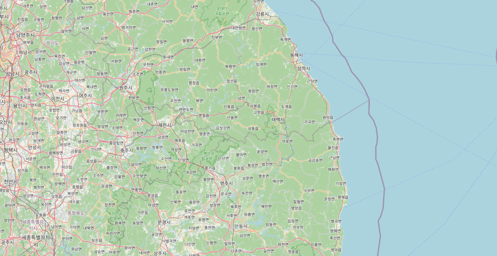

4
속초항 인근
4
속초 동방
4
고성 · 북방
4
속초 · 남방
고성 연안 조타장치손상
선박용도
화물선
연안화물선
선박톤수
100~500톤
사고위치
고성군 연안
발생일시
2026-02-28 16:40
사고유형
조타장치손상
해양 레이어
향해지원
항로표지
고정표지
이동표지
교량등
레이콘
AIS
이상물체
간출암·암암·세암
노출암
어초
해상교통
정박지_법령
양길항로부
진입금지
금지해역
수중레저활동금지구역
항만경계
항만경계
업무지원(인허가관련)
업무지원(인허가관련)
종합지도
종합지도